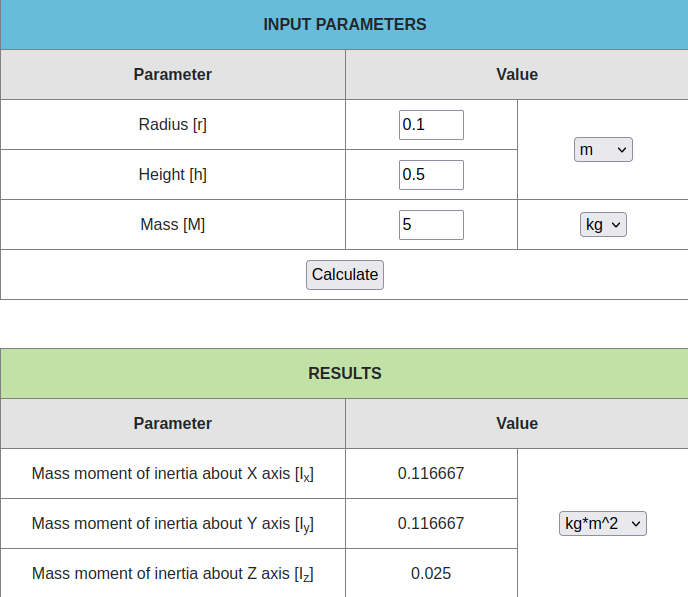

URDF and XACRO
- Using URDF
- Launch nodel from cli
- Launch gazebo and spawn model
Prerequisite
sudo apt install ros-foxy-urdf
sudo apt install ros-foxy-xacro
Create pkg
ros2 pkg create --build-type ament_cmake mulecar_description
Launch and Spawn
cli
-
launch gazebo
ros2 launch gazebo_ros gazebo.launch.py
-
spawn model
ros2 run gazebo_ros spawn_entity.py -entity my_robot1 -file <>/basic.urdf
-
entity: model name
- file: file location
URDF minimal
<?xml version="1.0"?>
<robot name="myfirst">
<link name="base_link">
<inertial>
<origin xyz="0 0 0" rpy="0 0 0"/>
<mass value="5" />
<inertia ixx=" 0.116667 " ixy="0.0" ixz="0.0" iyy=" 0.116667 " iyz="0.0" izz="0.025"/>
</inertial>
<collision>
<origin xyz="0 0 0" rpy="0 0 0"/>
<geometry>
<cylinder radius="0.1" length="0.5"/>
</geometry>
</collision>
<visual>
<origin rpy="0.0 0 0" xyz="0 0 0"/>
<geometry>
<cylinder radius="0.1" length="0.5"/>
</geometry>
</visual>
</link>
</robot>
inertial
online calculator

Launch and Spawn
using ROS2 launch file to launch gazebo and spawn model
1
2
3
4
5
6
7
8
9
10
11
12
13
14
15
16
17
18
19
20
21
22
23
24
25
26
27
28
29
30
31
32
33
34
35
36
37 | import os
from ament_index_python.packages import get_package_share_directory
from launch import LaunchDescription
from launch.actions import DeclareLaunchArgument, ExecuteProcess
from launch.substitutions import LaunchConfiguration
from launch_ros.actions import Node
from launch import logging
log = logging.get_logger(__name__)
def generate_launch_description():
urdf_file_name = 'urdf/basic.urdf'
urdf = os.path.join(
get_package_share_directory('mulecar_description'),
urdf_file_name)
log.warning(urdf)
return LaunchDescription([
ExecuteProcess(
cmd=[
"gazebo",
"-s",
"libgazebo_ros_init.so",
"-s",
"libgazebo_ros_factory.so"
],
output="screen"
),
Node(
package='gazebo_ros',
executable='spawn_entity.py',
name='urdf_spawner',
output='screen',
arguments=["-file", urdf, "-entity", "my"])
])
|
- :libgazebo_ros_init:
- :libgazebo_ros_factory:
- :spawn robot from file:
XACRO
sudo apt install ros-foxy-xacro
macro file
- inertia macro file
<?xml version="1.0"?>
<robot xmlns:xacro="http://www.ros.org/wiki/xacro">
<xacro:macro name="cylinder_inertia" params="m r h">
<inertia ixx="${m*(3*r*r+h*h)/12}" ixy = "0" ixz = "0"
iyy="${m*(3*r*r+h*h)/12}" iyz = "0"
izz="${m*r*r/2}"
/>
</xacro:macro>
</robot>
xacro file
1
2
3
4
5
6
7
8
9
10
11
12
13
14
15
16
17
18
19
20
21
22
23
24
25
26 | <?xml version="1.0"?>
<robot name="myfirst"
xmlns:xacro="http://www.ros.org/wiki/xacro">>
<xacro:include filename="$(find mulecar_description)/urdf/macros.xacro" />
<xacro:property name="radius" value="0.1"/>
<xacro:property name="height" value="0.5"/>
<link name="base_link">
<inertial>
<origin xyz="0 0 0" rpy="0 0 0"/>
<mass value="5" />
<xacro:cylinder_inertia m="5" r="${radius}" h="${height}"/>
</inertial>
<collision>
<origin xyz="0 0 0" rpy="0 0 0"/>
<geometry>
<cylinder radius="${radius}" length="${height}"/>
</geometry>
</collision>
<visual>
<origin rpy="0.0 0 0" xyz="0 0 0"/>
<geometry>
<cylinder radius="${radius}" length="${height}"/>
</geometry>
</visual>
</link>
</robot>
|
cli usage
xacro installed as a part of ros-foxy-xacro package
launch
1
2
3
4
5
6
7
8
9
10
11
12
13
14
15
16
17
18
19
20
21
22
23
24
25
26
27
28
29
30
31
32
33
34
35
36
37
38
39
40
41
42
43
44
45
46
47
48 | import os
from ament_index_python.packages import get_package_share_directory
from launch import LaunchDescription
from launch.actions import DeclareLaunchArgument, ExecuteProcess
from launch.substitutions import LaunchConfiguration
from launch_ros.actions import Node
from launch import logging
from launch.substitutions import Command
import xacro
log = logging.get_logger(__name__)
def generate_launch_description():
xacro_file_name = 'urdf/basic.urdf.xacro'
xacro_file = os.path.join(
get_package_share_directory('mulecar_description'),
xacro_file_name)
doc = xacro.parse(open(xacro_file))
xacro.process_doc(doc)
params = {'robot_description': doc.toxml()}
return LaunchDescription([
ExecuteProcess(
cmd=[
"gazebo",
"-s",
"libgazebo_ros_init.so",
"-s",
"libgazebo_ros_factory.so"
],
output="screen"
),
Node(
package='robot_state_publisher',
executable='robot_state_publisher',
output='screen',
parameters=[params]
),
Node(
package='gazebo_ros',
executable='spawn_entity.py',
name='urdf_spawner',
output='screen',
arguments=['-topic', 'robot_description', "-entity", "my"])
])
|